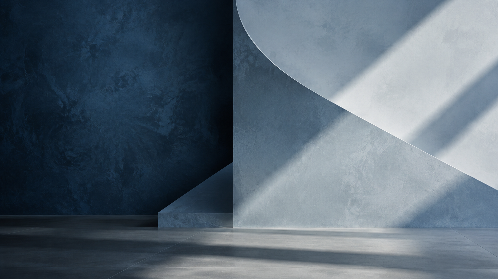
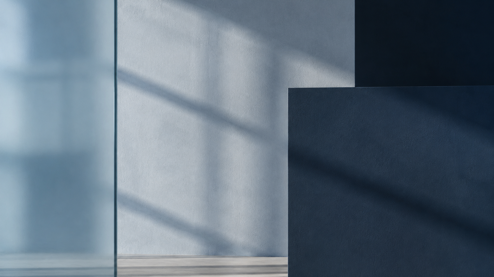

01↗
Lubelska
Dom prywatny · salon i kuchnia

01 — O pracowni
Projektujemy wnętrza, które łączą estetykę, funkcję i rytm życia ich właścicieli.
Przygotowujemy projekty koncepcyjne i wykonawcze, dobieramy materiały oraz tworzymy wizualizacje. Możemy przeprowadzić Cię przez cały proces — od zmian lokatorskich po nadzór nad realizacją.
Poznaj nasz proces ↓
Artefekt Interior Design
„Dobre wnętrze
zaczyna się od
uważnej rozmowy.”
02 — Realizacje
Każda realizacja jest inna, bo zaczyna się od innej codzienności. Poniżej kilka kadrów z wnętrz zaprojektowanych przez Artefekt.


Materiały, światło, proporcje.
03 — Zakres współpracy
Funkcjonalny układ mieszkania jeszcze przed odbiorem.
01 ↗Kierunek, klimat i wizualna opowieść o Twoim wnętrzu.
02 ↗Dokumentacja, materiały i wsparcie aż do realizacji.
03 ↗Konkretne decyzje podparte doświadczeniem i dobrym obrazem.
04 ↗
04 — Proces
Poznajemy wnętrze, potrzeby i styl życia.
Układ, klimat, materiały i wizualna historia projektu.
Dokumentacja, wybory i decyzje potrzebne do realizacji.
Wsparcie, wykonawcy oraz nadzór autorski.
05 — Pytania i kontakt
Od rozmowy o Twoim wnętrzu, codzienności i zakresie, którego potrzebujesz. Po niej jasno określamy kolejne kroki.
Tak. Możemy zaprojektować jedno wnętrze, ale również poprowadzić cały dom, mieszkanie lub lokal komercyjny.
Tak — dobieramy materiały, polecamy sprawdzonych wykonawców i prowadzimy nadzór autorski nad realizacją.
Tak. Fotorealistyczne wizualizacje pozwalają zobaczyć docelowy klimat, światło i detale przed rozpoczęciem prac.
06 — Kontakt
Wypełnij krótki formularz lub zadzwoń. Wrócimy do Ciebie, żeby porozmawiać o potrzebach i najlepszym zakresie współpracy.